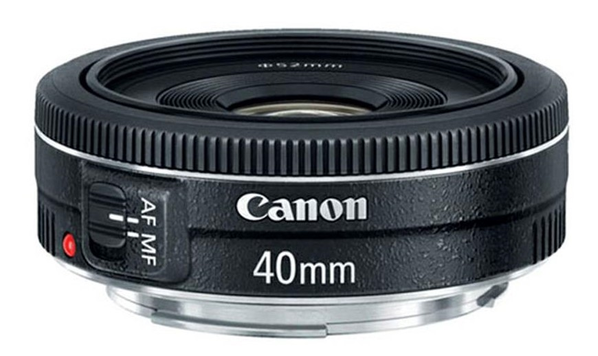

Характеристики объективов
Каждый начинающий фотограф при покупке фотокамеры задается вопросом "Какой объектив мне лучше выбрать?".
Однозначного ответа на этот вопрос нет, потому что каждый выбирает то, что ему по душе. В данной статье я решила привести краткое описание и характеристики каждого из них.
- Объектив Canon 18-135 mm
Плюсы:
- удобный диапазон зума;
- быстрый и плавный автофокус Nano USM;
- возможность установки адаптера сервопривода PZ-E1;
- эффективный стабилизатор изображения;
- сравнительно высокая резкость на прикрытой диафрагме;
- невысокий уровень хроматических аберраций;
- малая дистанция фокусировки.
Минусы:
- неудобные кнопки селекторов;
- падение резкости по краю кадра на открытой диафрагме;
- не всегда мягкое боке.
Canon EF-S 18-135mm f/3.5-5.6 IS STM – это стандартный зум-объектив со стабилизатором изображения и возможностью бесшумной автоматической фокусировки. Данная модель подходит как для фотосъемки, так и для записи видео.
Этот объектив с мощным зумом – прекрасный вариант для путешествия. С его помощью возможно реализовать различные творческие замыслы и отразить разные сюжеты. Автофокусировка осуществляется при помощи шагового двигателя (на это указывает аббревиатура STM в названии объектива) и выполняется плавно и бесшумно, благодаря чему при видеосъемке на записи не будут слышны посторонние шумы.
Характеристики Canon 18-135 mm:
| Тип объектива |
zoom-объектив |
| Класс объектива |
стандартный (универсальный) |
| Назначение |
кроп |
| Фишай |
Нет |
| Диафрагма при мин. фокусном расстоянии |
3.5 |
| Диафрагма при макс. фокусном расстоянии |
5.6 |
| Минимальное фокусное расстояние, мм |
18 |
| Максимальное фокусное расстояние, мм |
135 |
| Крепление |
Canon EF-S |
| Автоматическая фокусировка |
Есть |
| Режим макросъемки |
Нет |
| Стабилизатор изображения |
Есть |
| Ультразвуковой мотор |
Нет |
| Внутренняя фокусировка |
Нет |
| Tilt/Shift |
Нет |
|
| Число элементов |
16 |
| Число групп элементов |
12 |
| Число лепестков диафрагмы |
7 |
| Диаметр резьбы для светофильтра |
67mm |
| Размер |
76.6 x 96 мм |
| Вес, г |
480 |
| Бленда в комплекте |
Нет |
| Бленда |
EW-73B |
| Крышка в комплекте |
Есть |
| Крышка |
E-67 и E-67II |
| Чехол |
LP1116 |
|
- Объектив Canon 40 mm
Плюсы:
- компактная конструкция "блинчик";
- рлавная и бесшумная фокусировка STM при видеосъемке совместимыми камерами;
- высокая светосила f/2.8 для съемки при низкой освещенности;
- минимальная дистанция фокусировки 0,3 м;
- быстрый и точный автофокус для отличной резкости;
- отличное качество изображения по всему кадру.
Минусы:
- отсутствие zoom-фокусировки;
- шумнее, чем другие STM объективы.

Canon EF 40 f/2.8 STM – это компактный объектив в форме «блинчика». Данная модель универсальна, фокусное расстояние равно 40 мм, она прекрасно подходит ко всем случаям в жизни. Благодаря большой светосиле f/2.8 с помощью этого объектива можно снимать при недостаточной освещенности и успешно контролировать глубину резкости. Также Canon EF 40 f/2.8 STM оснащен ультразвуковым мотором, обеспечивающим бесшумную и очень плавную автоматическую фокусировку, что, несомненно, важно при видеосъемке.
Минимальное расстояние фокусировки – 0,3 метра.
Характеристики Canon 40 mm:
| Тип объектива |
фиксированный фокус |
| Класс объектива |
стандартный (универсальный) |
| Назначение |
полный кадр |
| Фишай |
Нет |
| Диафрагма при мин. фокусном расстоянии |
2.8 |
| Минимальное фокусное расстояние, мм |
40 |
| Крепление |
Canon EF |
| Автоматическая фокусировка |
Есть |
| Режим макросъемки |
Нет |
| Стабилизатор изображения |
Нет |
| Ультразвуковой мотор |
Нет |
| Внутренняя фокусировка |
Нет |
| Tilt/Shift |
Нет |
|
| Число элементов |
6 |
| Число групп элементов |
4 |
| Число лепестков диафрагмы |
7 |
| Диаметр резьбы для светофильтра |
52mm |
| Размер |
68.2 x 22.8 мм |
| Вес, г |
130 |
| Бленда в комплекте |
Нет |
| Бленда |
ES-52 |
| Крышка в комплекте |
Есть |
| Крышка |
E-52 II |
| Чехол |
LP811 |
|